Graduation Coasters
I began with thin planks of pine for my coasters. No particular reason for using pine other than the fact that it was the only option at my local Lowe's that offered good dimensions. I purchased a special drill bit to cut circles from the boards and proceeded to cut ~60 blank coaster forms using a drill press. I found that this bit made very rough cuts sometimes, leaving a jagged edge or an undersized coaster. The bit normally held the freshly-cut coaster inside it immediately after cutting, and I found that if that piece was not removed before the next cut, the bit was much more stable and made near-perfect circles.
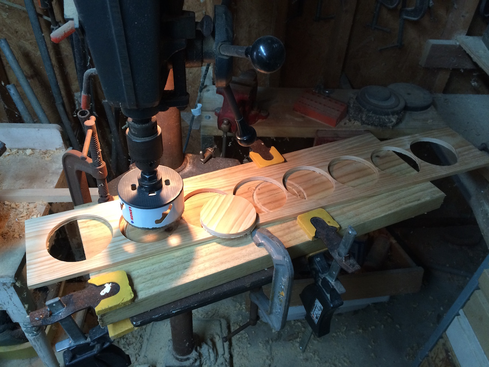
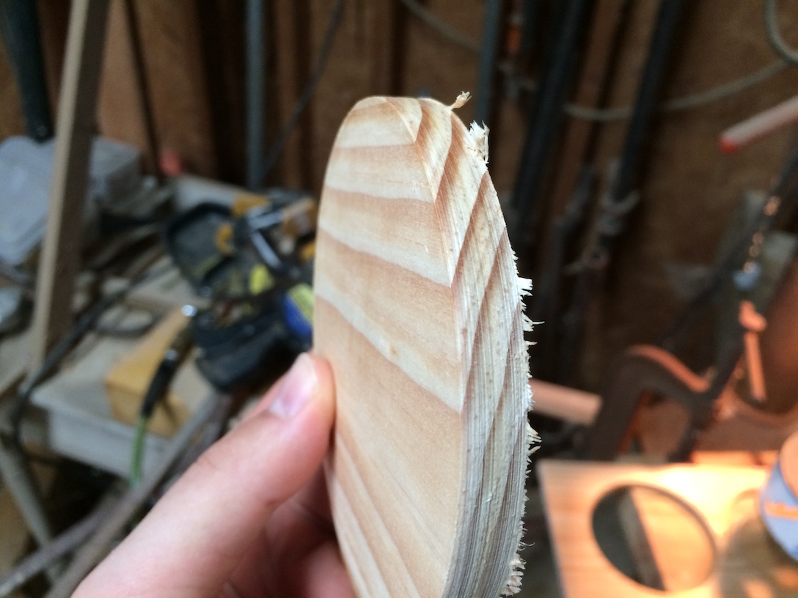 Top: the drill setup used to cut the blank coasters. Bottom: a freshly cut coaster.
The next step was to sand the edges of the coasters, first to remove any roughness from the drill cut and then to add a more pleasing chamfer edge. I used a big floor-standing power sander to accomplish this.
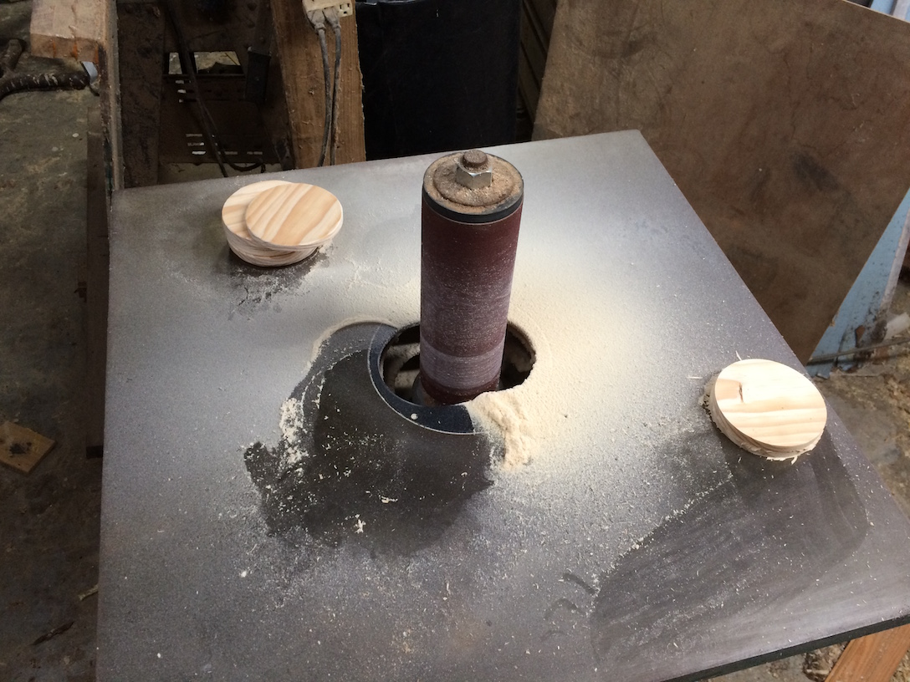
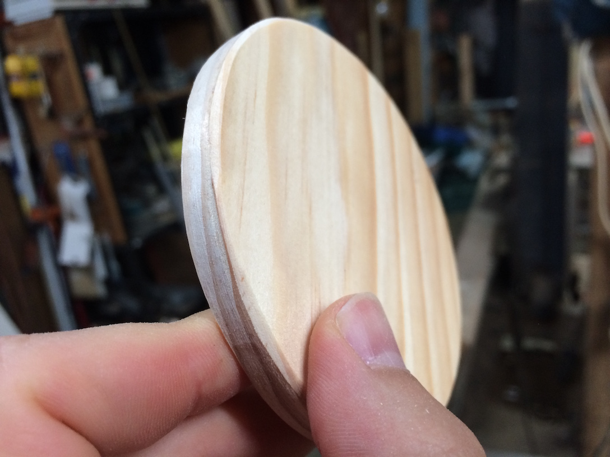 Top: the sander I used to touch up the coasters. Bottom: a coaster with chamfer edges.
Once I had the coasters cut and sanded, I began burning the pattern into them. I didn't take any pictures of this step, unfortunately. I printed pages and pages of the pattern I wanted to use, shrunk down to about 2 inches by 3 inches, then cut them out and taped them to each coaster. I then took a wood burner and burned through the paper and into the wood to get a light impression of the image. The last step was to remove the paper and burn the pattern a second time to darken it.
My favorite part of this project was applying the stain, because that's when they started to look good. I tried out three different Minwax stain colors – Gunstock, Red Oak, and Cherry – and ended up using all three. Each set of coasters got a mixture of the three colors.
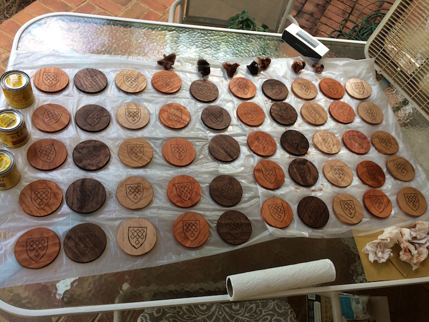 My workstation. I stained the tops twice and the bottoms once.
To protect the coasters, I used sprayable polyurethane. This prevents streaks that can come from wipe-on polyurethane, and also let me cover all of the coasters in one go. I applied four coats, letting each previous coat dry before adding another, and plan to add a fifth just for good measure before shipping them out to friends.
I wanted to build something that could hold and display the coasters, and ended up with two different designs. The first one focuses on the wood planks from which the coasters were cut. Each board now had a series of holes, and cutting the board once along its length and then between each hole created a number of curved pieces.
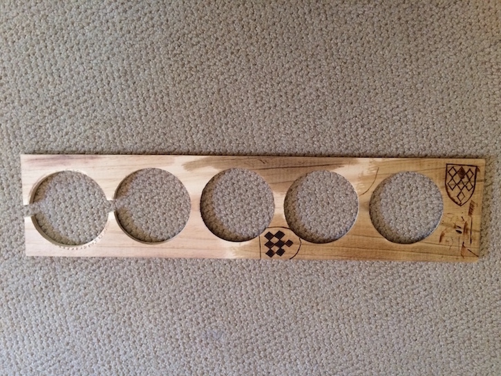
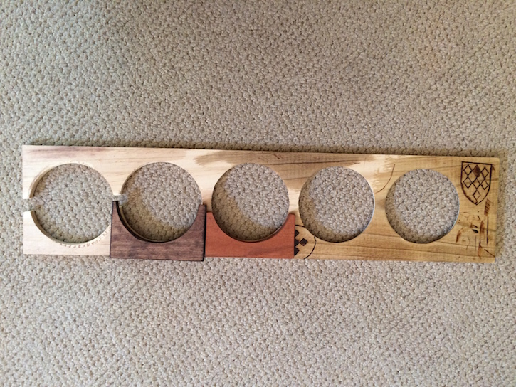 Top: the remainder of one plank after cutting the coasters from it. Bottom: the same plank, but with two samples showing how the plank was cut into smaller pieces.
I glued 5 of these pieces together so that they created a uniform surface on their curved sides, then sanded the square outer surfaces on a power sander to make the outer faces as smooth as possible. Once that was done, I used two more of the curved pieces, flipped upside down, and glued them on the "front" and "back" of the 5-piece composite to make legs that it could rest on. I stained each piece – the front legs, the 5-layer piece, and the rear legs – with the same colors as the coasters so that they complement one another. I came to call this design the Cradle.
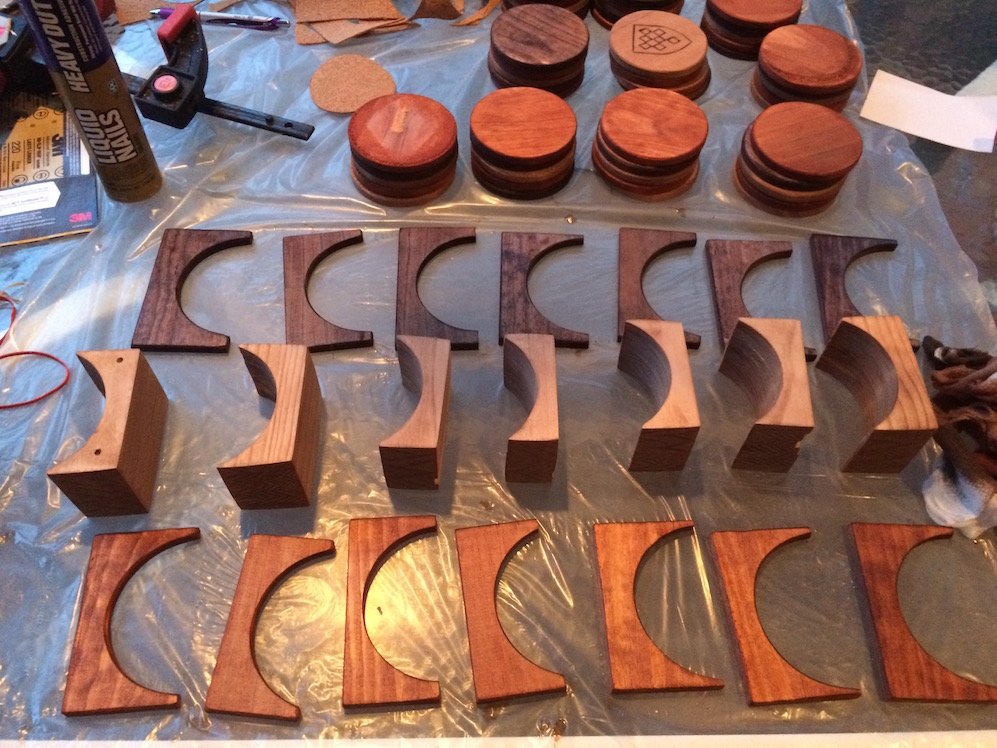 All seven cradles, separated into their three main parts for staining.
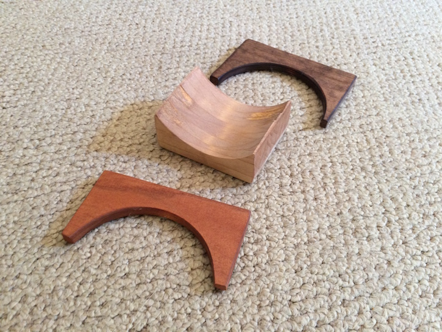 A closeup of the pieces of a single cradle. The middle piece is the composite 5-layer one.
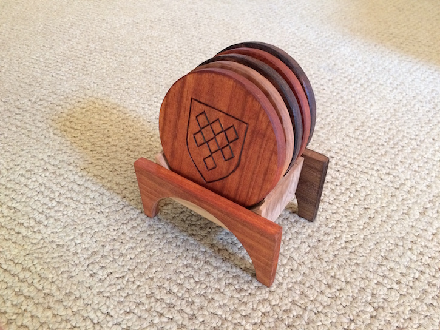 A finished shot of a cradle with coasters.
The second design for a home base for the coasters revolved around a series of slots into which the coasters could be placed. I didn't take pictures of this step either, but the photos below of the product show partly how it was done. I glued a series of pieces of wood together, alternating between large pieces that spanned several inches across and small pieces that only served as spacers, so that I ended up with a big block with empty slots running all the way from the top to the bottom. I then cut that block horizontally into four thinner rectangles, each with the same slots running through the top to the bottom. I call this design the Drying Rack.
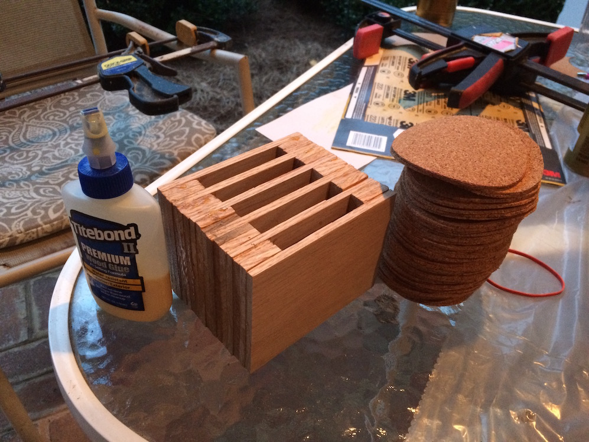 One of the blocks at my workstation, before being cut into four. You can see the individual pieces glued together.
This is a single Drying Rack cut from the block shown above.
With the coasters in place.